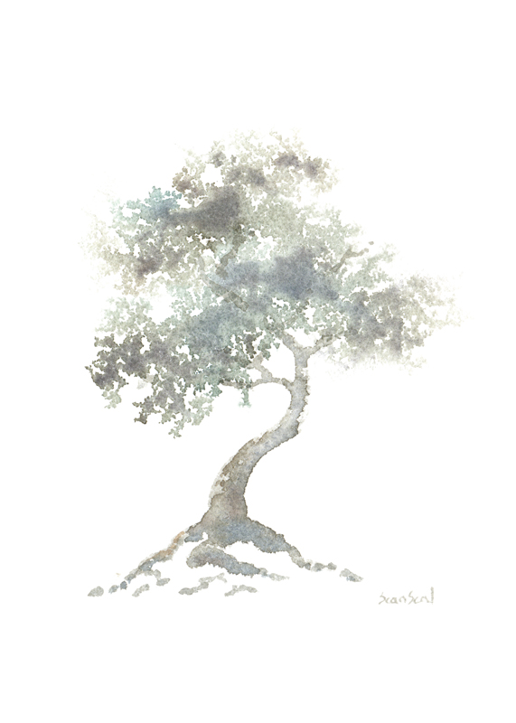

କଟକ ଜିଲ୍ଲାର ହରିହରପୁର ପ୍ରଗନା ମଧ୍ୟରେ ଗୋଟିଏ ମଫସଲ ଗ୍ରାମ, ନାମ ପାଟପୁର | ଗ୍ରାମ ମୁଣ୍ଡାମୁଣ୍ଡିରେ ଗୋଟିଏ ଘର | ଆଗିଲି ପିଛିଲି ଚାରିବଖରା, ଖଞ୍ଜା ପାଚିରୀ ଚାଳିଆରେ ଢିଙ୍କିଶାଳ, ଅଗଣା ମଧ୍ୟରେ କୂଅ, ଆଗକୁ ଦାଣ୍ଡଦୁଆର, ପଛକୁ ବା.ଡ଼ିଦୁଆର | ଦାଣ୍ଡଦୁଆର ମେଲାଘରେ ଦାଣ୍ଡଲୋକେ ବସା ଉଠା କରନ୍ତି, ପ୍ରଜାମାନେ ଖଜଣା ଦେବାକୁ ଆସି ଏହିଠାରେ ବସନ୍ତି | ଶ୍ୟାମବନ୍ଧୁ ମହାନ୍ତି ଜମିଦାର ତରଫରୁ ଗ୍ରାମର କରଣ, ମାସକୁ ଦରମା ଦୁଇଟଙ୍କା, ଦରମା ଛା.ଡ଼ି ପାଉତି ବିଶୋଧନୀ, ବାହାଲହଣା ଇତ୍ୟାଦିରୁ ଦୁଇପଇସା ହାତପୈଠ ହୁଏ | ସବୁ ମିଶାଇଲେ ମାସକୁ ଚାରି ଟଙ୍କାରୁ ଉଣା ହେବ ନାହିଁ, ସଂସାର ଏକରକମ ଚଳେ | ଏକରକମ କିଆଁ ? ବୋଇଲେ ଭଲ ଚଳେ | ଏଇଟା ହେଲା ନାହିଁ, ସେଇଟା ଘରେ ନାହିଁ, ଏପରି କଥା ଘରର କାହାରି ମୁହଁରୁ ଶୁଣାଯାଏ ନାହିଁ | ବା.ଡ଼ିରେ ଶାଗ ମାଗ ଛା.ଡ଼ି ସଜନା ଦୁଇଗଛ | ଘରେ ଲଗାପ.ଡ଼ିଆ ବରଷବିଆଣୀ ଗାଈ ଦୁଇଟା ବନ୍ଧା ; ଦୁଧ ଟିକିଏ, ଚହ୍ଲା ମନ୍ଦାଏ ହାଣ୍ଡିତଳେ ଲାଗିଥାଏ | ବୁଢ଼ୀ ଚଷୁ ମିଶାଇ ଘଷି ତା.ଡ଼ିଦିଏ, କାଠ କିଣା ବାଧେ ନାହିଁ | ଶ୍ୟାମବନ୍ଧୁଟି ବଡ଼ ସିଧା ସଳଖ ଲୋକ, ପ୍ରଜାମାନେ ମାନନ୍ତି, ସୁଖ ପା'ନ୍ତି | ବାପରେ ଧନରେ କହି କହି ଦୁଆର ଦୁଆର ବୁଲି ଖଜଣା ଅସୁଲ କରେ, କାହାରିଠାରୁ ଅନ୍ୟାୟରେ ପଇସାଟିଏ ନିଏ ନାହିଁ | ପ୍ରଜାମାନେ ଖଜଣା ଦେଇ ପାଉତି  ମାଗନ୍ତି ନାହିଁ, ସେ ଚାରିଆଙ୍ଗୁଳି ତାଳପତ୍ରରେ ଖଣ୍ଡେ ପାଉତି ଲେଖି ବଳେ ଚାଳରେ ଗୁଞ୍ଜି ଦେଇଯାଏ | ଜମିଦାର ପିଆଦା ଆସିଲେ ଗାଁ'କୁ ଛାଡ଼େ ନାହିଁ, ଆପେ ହାତ ଓଠ ଧରି ଧୂଆଁଖିଆ ଦୁଇପଇସା ଅଣ୍ଟାରେ ଗୁଞ୍ଜିଦେଇ ବିଦା କରେ | ଶ୍ୟାମବନ୍ଧୁ ଘରେ ଖାଇବାକୁ କୁଟୁମ୍ବ ଚାରିଜଣ, ଆପେ ଦୁଇ ପରାଣୀ, ମା ବୁଢୀ଼, ଦଶ ବରଷର ଝିଅ | ଝିଅର ନାମ ରେବତୀ | ଶ୍ୟାମବନ୍ଧୁ ସଞ୍ଜବେଳେ ପିଣ୍ଡାରେ ବସି 'କୃପାସିନ୍ଧୁ ବଦନ' ଗାଏ, ଆଉ ଆଉ ଭଜନ ଗାଏ, କେବେ କେବେ କାଠ ରୁଖାଟି ଉପରେ ବଇଠାଟିଏ ଥୋଇ ଭାଗବତ ପଢେ, ରେବତୀ ପାଖରେ ବସି ଶୁଣୁଥାଏ | ସେ ମୁହେଁ ମୁହେଁ ଢେର ଭଜନ ଶିଖିଗଲାଣି, ତା ପିଲା ମୁହଁକୁ ଭଜନଗୁ.ଡ଼ିକ ଖୁବ୍ ମାନେ | ସଞ୍ଜବେଳେ ବାପା ପାଖରେ ବସି ଭଜନ ଗାଇଲେ ଗାଁର କୌଣସି କୌଣସି ଲୋକ ଆସି ଶୁଣନ୍ତି | ରେବତୀ ବାପା ପାଖରୁ ଗୋଟିଏ ଭଜନ ଶିଖିଥିଲା, ସେଇଟି ଗାଇଲେ ଶ୍ୟାମବନ୍ଧୁ ବଡ଼ ଖୁସି ହୁଏ | ପ୍ରତିଦିନ ଝିଅକୁ ଗାଇବାକୁ କହେ, ରେବତୀ ଗାଏ ---
କା' ଆଗେ କରିବି ଗୁହାରି ?
ତୁମ୍ଭେ ନ ଚାହିଁଲେ ନାଥ ଗରିବ ଯିବ ସରି
କର ବା ନ କର ତ୍ରାଣ, ପଦେ ସମର୍ପିଛି ପ୍ରାଣ,
ହୃଦେ ଅଛି ତବ ନାମ ଧରି |
ତୁମ୍ଭ ବିନା ତ୍ରିଜଗତ ଶୂନ୍ୟ ହେ ହରି |
ଶୀତଳ କର ଜୀବନ ପ୍ରେମାମୃତ ଦାନ କରି |
ଦୁଇ ବରଷ ତଳେ ସ୍କୁଲ ଡେଃ ଇନ୍ସପେକ୍ଟର ମଫସଲ ଗସ୍ତକୁ ଯିବା ସମୟରେ ପାଟପୁରରେ ରାତିଏ ରହିଯାଇଥିଲେ | ଗ୍ରାମର ମୁଖିଆ ମୁଖିଆ କେତେ ଜଣ ଲୋକ କୁହାପୋଛା କରିବାରୁ ଦିପୋଟିବାବୁ ଓ.ଡ଼ିଶା ବିଭାଗର ଇନ୍ସପେକ୍ଟରଙ୍କଠାରୁ ରିପୋର୍ଟ କରି ଗୋଟିଏ ଅପରପ୍ରାଇମେରୀ ସ୍କୁଲ ବସାଇ ଦେଇଅଛନ୍ତି | ଶିକ୍ଷକ ବେତନ ମାସକୁ ଚାରି ଟଙ୍କା | ଏହି ଚାରି ଟଙ୍କା ସରକାରରୁ ମିଳେ | ଏହାଛଡ଼ା ପ୍ରତି ପିଲା ମାସକୁ ଅଣାଏ ଲେଖାଏଁ ଦିଅନ୍ତି | ଶିକ୍ଷକଟି କଟକ ନର୍ମାଲ ସ୍କୁଲର ଅବଧାନବିଭାଗର ଉତ୍ତୀର୍ଣ୍ଣ ଛାତ୍ର, ନାମ ବାସୁଦେବ | ନାମଟି ଯେପରି ବାସୁଦେବ, ଲୋକଟା ମଧ୍ୟ ସେହିପରି ବାସୁଦେବ | ଟୋକାଟା ଭିତର ବାହାର ସବୁ ସୁନ୍ଦର | ଗାଁ ମଝିରେ ଚାଲିଯିବା ବେଳେ ମୁଣ୍ଡଟେକି କାହାକୁ ଚାହେଁ ନାହିଁ | ବୟସ ଆନ୍ଦାଜ କୋ.ଡ଼ିଏ | ସୁନ୍ଦର ରୂପ ଯେମନ୍ତ ଗୋଟିଏ ଚାଉଳରେ ଗଢ଼ା | ପିଲାଦିନେ ପିହୁଳାରୋଗ ହୋଇଥିଲା | ତା' ମା ମୁଣ୍ଡରେ ତତଲା ବୋତଲ ମୁହଁ ଚିହ୍ନ ଦେଇଥିଲା | ସେ ଚିହ୍ନ ଆଜିଯାଏ ଅଛି | ହେଲେ ସେ ଚିହ୍ନ ତାକୁ ମାନେ | ବାସୁଦେବ ପିଲାକାଳରୁ ମା ବାପ ଛେଉଣ୍ଡ, ମାମୁଘରେ ରହି ମଣିଷ ହୋଇଛି | ବାସୁଦେବ ଜାତିରେ କରଣ, ଶ୍ୟାମବନ୍ଧୁ ମଧ୍ୟ କରଣ | କେବେ ପୁନେଇ ଗୁରୁବାରରେ ଘରେ ପିଠାପଣା ହେଲେ ଶ୍ୟାମବନ୍ଧୁ ପାଠଶାଳାକୁ ଯାଇ କହିଆସେ, "ବାପା ବାସୁ ! ସଞ୍ଜବେଳେ ଟିକେ ଆମ ଘରକୁ ଯିବ, ତୁମ ମାଉସୀ ଡାକିଛନ୍ତି |" ଏହିପରି ଯିବାଆସିବାରେ ସେମାନଙ୍କ ମଧ୍ୟରେ ଗୋଟିଏ ମାୟା ଲାଗିଗଲାଣି | ରେବତୀ ବାସୁକୁ ଦେଖିଲେ କହେ, "ଆହା, ମା ଛେଉଣ୍ଡଟି, କଣ ଖାଏ -- କିଏ ତା ଖାଇବା ଦେଖୁଛି |" ବାସୁ ପ୍ରତିଦିନ ସଞ୍ଜବେଳେ ଯାଇ ଶ୍ୟାମବନ୍ଧୁ ପାଖରେ ଘ.ଡ଼ିଏ ଅଧେ ବସି ଆସେ | ବାସୁକୁ ଦୂରରୁ ଦେଖିଲେ "ବାସୁଭାଇ ଅଇଲେ, ବାସୁଭାଇ ଅଇଲେ" ବୋଲି ରେବତୀ ପାଟି କରି ବାପକୁ କହେ | ରେବତୀ ସଞ୍ଜବେଳେ ବାପ ପାଖରେ ବସି ପ୍ରତିଦିନ ପଠିତ ପୁରୁଣା ଭଜନଗୁ.ଡ଼ିକ ବାସୁକୁ ଶୁଣାଏ | ବାସୁକୁ ସେହି ଗୀତ ନୂଆ ନୂଆ ପରି ଲାଗେ | ଦିନେ ଏ କଥା ସେ କଥା ପଡ଼ୁ ପଡ଼ୁ ଶ୍ୟାମବନ୍ଧୁ ଶୁଣିଲେ, କଟକରେ ଗୋଟିଏ ଝିଅସ୍କୁଲ ଅଛି, ସେଠାରେ ଝିଅମାନେ ପଢ଼ନ୍ତି, ଲୁଗାସିଆଁ ଶିଖନ୍ତି | ସେହି ଦିନଠାରୁ ରେବତୀକୁ ପାଠ ପଢ଼ାଇବାକୁ ଶ୍ୟାମବନ୍ଧୁର ମନ ହେଲା ଏବଂ ଆପଣା ମନର କଥା ବାସୁଦେବକୁ କହିଲା | ବାସୁ ଶ୍ୟାମବନ୍ଧୁକୁ ପିତୃତୁଲ୍ୟ ମାନେ, କହିଲା, "ଆଜ୍ଞା, ମୁଁ ସେହି କଥାଟା କହିବି କହିବି ହେଉଥିଲି |" ଦୁଇଜଣଙ୍କ ପରାମର୍ଶରେ ରେବତୀକୁ ପାଠ ପଢ଼ାଇବାର ସ୍ଥିର ହେଲା | ରେବତୀ ପାଖରେ ବସି ଶୁଣୁଥିଲା, ଦୁଇ ଚିଲାରେ ଘର ଭିତରକୁ ଯାଇ ମାକୁ ଆଉ ଜେଜୀକୁ "ମୁଁ ପାଠ ପ.ଢ଼ିବି, ମୁଁ ପାଠ ପ.ଢ଼ିବି" ଖବର ଦେଲା | ମା କହିଲେ, "ହଉ ହଉ ପ.ଢ଼ିବୁ |" ଜେଜୀ କହିଲେ, "ପାଠ କଣ ଲୋ ? ମାଇକିନିଆ ଝିଅଟା ପାଠ କଣ ? ରନ୍ଧା ବଢ଼ା ଶିଖ, ପିଠାପଣା କରି ଶିଖ, ଝୋଟିଦିଆ ଶିଖ, ଦହିମୁହାଁ ଶିଖ, ପାଠ କଣ ?"
ରାତିରେ ଶ୍ୟାମବନ୍ଧୁ ପିଣ୍ଡାରେ ଖଣ୍ଡେ ଆମ୍ବକାଠ ପିଢ଼ା ଉପରେ ବସି ଭାତ ଖାଉଛନ୍ତି, ରେବତୀ ସାଙ୍ଗରେ ବସି ଖାଉଛି | ବୁଢ଼ୀ ଆଗରେ ବସି -- 'ଭାତପୁଞ୍ଜାଏ ଆଣ; ଡାଲିପାଣି ଟିକିଏ ପକେଇ ଯା, ଲୁଣ ଟିକିଏ ଦେ' ଇତ୍ୟାଦି କଥା ବୋହୂ ପ୍ରତି ଆଦେଶ କରୁଛନ୍ତି | କଥା କଥାରେ ବୁଢ଼ୀ କହି ବସିଲେ, "ହଁ ରେ ଶ୍ୟାମ ! ରେବୀ ପାଠ ପ.ଢ଼ିବ -- ପାଠ କ'ଣରେ, ତିରିଲା ଝିଅର ପାଠପଢ଼ା କଣ ?" ଶ୍ୟାମବନ୍ଧୁ କହିଲେ, "ହେଉ, କହୁଛି ତ ପ.ଢ଼ୁ | ଝଙ୍କଡ଼ ପଟ୍ଟନାୟକ ଘର ଝିଅମାନେ ଯେ ଭାଗବତ ବୋଲି ପାରନ୍ତି, ବୈଦେହୀଶ ବିଳାସ ଛାନ୍ଦ ଗାଆନ୍ତି |" ରେବତୀ ଭାରି ଖପା ହୋଇ ଯାଇ ଜେଜୀକୁ ଗାଳି ଦେଇ କହିଲା, "ଯା ଲୋ ବୁଢ଼ୀ, ଡୁଗୁରିଟା |" ତାହା ବାଦ ବାପାକୁ ଅଳି କରି କହିଲା, "ନାଁ ବାଁପାଁ -- ନାଁ ବାଁପାଁ ମୁଁ ପାଁଠଁ ପଁ.ଢ଼ିବିଁ |" ଶ୍ୟାମବନ୍ଧୁ କହିଲେ, "ହଁ -- ହଁ -- ତୁ ପ.ଢ଼ିବୁ |" ସେଦିନ କଥା ଏତିକି |
ତହିଁ ଆରଦିନ ଉପରଓଳି ବାସୁଦେବ ସୀତାନାଥ ବାବୁଙ୍କ ପ୍ରଥମପାଠ ଖଣ୍ଡିଏ ନେଇ ରେବତୀକୁ ଦେବାରୁ, ସେ ବଡ଼ ଖୁସି ହୋଇ ବାପା ପାଖରେ ବସି କିତାପର ମୂଳ ପୁଡ଼ାଠାରୁ ଶେଷ ପୁଡ଼ାଯାଏ ଓଲଟାଇ ଓଲଟାଇ ଦେଖିଲା | ସେଥିରେ ହାତୀ, ଘୋଡ଼ା, ଗୋରୁ ଇତ୍ୟାଦିର ଛବି ଦେଖି ଭାରି ଖୁସି ହୋଇଗଲା | ରଜାମାନେ ହାତୀ, ଘୋଡ଼ା ବାନ୍ଧି ଖୁସି ହୁଅନ୍ତି, କେହି ହାତୀ ଘୋଡ଼ା ଚ.ଢ଼ି ଖୁସି ହୁଏ, ଆମ ରେବୀ ଛବିଟା ଦେଖି ଖୁସି | ରେବୀ ଧାଇଁ ଯାଇ ମା'କୁ କିତାପର ଛବି ସବୁ ଦେଖେଇଲା ; ତାହା ବାଦ ଜେଜୀକୁ ଦେଖାଇଲା | ଜେଜୀ କିଞ୍ଚିତ୍ ବିରକ୍ତ ହୋଇ କହିଲା, "ହଁ -- ଯା -- ଯା |" ରେବୀ ତାକୁ 'ଦୁର୍ ଦୁର୍' ଗାଳି ଦେଇ ଫେରି ଆସିଲା |
ଆଜି ଦିନଟି ଭଲ -- ଶ୍ରୀପଞ୍ଚମୀ | ରେବତୀ ସକାଳୁ ବୁଡ଼ ପାରି ଗଧୋଇ ନୂଆ ଲୁଗା ଖଣ୍ଡିଏ ପିନ୍ଧି ଘର ବାହାର ହେଉଛି, ବାସୁ ଭାଇ ଆସିଲେ କିତାପ ପଢ଼ାଇ ଦେବ | ବୁଢ଼ୀ ଭୟରେ ବିଦ୍ୟାରମ୍ଭର ଆୟୋଜନ କିଛି ହୋଇ ନାହିଁ | ବେଳ ଛ' ଘ.ଡ଼ି ସମୟରେ ବାସୁ ଯାଇ ପଢ଼େଇ ଦେଲା, ସ୍ବରେ--ଅ, ସ୍ବରେ--ଆ, ହର୍ସ୍ବ--ଇ, ଦୀର୍ଘ--ଈ, ହର୍ସ୍ବ--ଉ, ଦୀର୍ଘ--ଊ, ଇତ୍ୟାଦି | ପ୍ରତିଦିନ ପଢ଼ା ଚାଲିଲା, ପ୍ରତିଦିନ ସଞ୍ଜବେଳେ ବାସୁ ଯାଇ ପଢ଼େଇଦିଏ | ଦୁଇ ବରଷ ମଧ୍ୟରେ ରେବତୀ ଢେର ପ.ଢ଼ିଗଲାଣି | ମଧୁରାଓଙ୍କ ଛାନ୍ଦମାଳା ପ.ଢ଼ିଯିବା ବେଳେ ତୁଣ୍ଡରେ ବାଟୁଳି ବାଜେ ନାହିଁ |
ଦିନେ ରାତିରେ ଶ୍ୟାମବନ୍ଧୁ ବସି ଭାତ ଖାଇବା ବେଳେ ମା' ପୁଅ ଦୁଇଜଣ କଥାବାର୍ତ୍ତା ହେଲେ | ପୂର୍ବେ ବୋଧକରୁଁ କିଛି କଥା ହୋଇଥିଲା, ଆଜି ସେହି କଥାର ଉପସଂହାର |
ଶ୍ୟାମବନ୍ଧୁ -- କି ମା, ଭଲ ହେବ ନାହିଁ କି ?
ବୁଢ଼ୀ -- ହଁ ଭଲ ତ ହେବ ; ଜାତି କଥାଟା ବୁଝିଛୁ ନା ?
ଶ୍ୟାମବନ୍ଧୁ -- ମୁଁ ଆଜିଯାଏ ଆଉ କ'ଣ ବୁଝୁଥିଲି ? ଭଲ କରଣ , ଗରିବପୁଅ ହେଲେ କଣ ହେବ, ଜାତି ଭଲ |
ବୁଢ଼ୀ -- ଧନ ଦଉଲତ ନାହିଁ ବିଚାର,
ଜାତି କଥାଟା ଆଗେ ପଚାର |
ଘରେ ରହିବ ତ ?
ଶ୍ୟାମବନ୍ଧୁ -- ଘରେ ନ ରହି ଆଉ କୁଆଡ଼େ ଯିବ ? ହଜାର ହେଲେ ମାମୁ ମାଈଁ ନା, ଆଉ କଣ ?
ରେବତୀ ପାଖରେ ବସି ଭାତ ଖାଉଥିଲା , ଏହି କଥାର ମର୍ମ ସେ କଣ ବୁଝିଲା ସେ ଜାଣେ ; ମାତ୍ର ସେହି ଦିନଠାରୁ ତାହାର ଭାବଭଙ୍ଗୀ ଅନ୍ୟରକମ ଦେଖୁଅଛୁଁ | ତାକୁ ବାପା ଆଗରେ ବାସୁଭାଇ ପଢ଼ାଇଦେଲେ କିପରି ଗୋଟାଏ ଲାଜ ମାଡ଼େ ; ଅକାରଣ ସକାରଣ ସବୁବେଳେ ହସ ମାଡ଼େ, ମୁଣ୍ଡ ତଳକୁ ପୋତିଦେଇ ଦୁଇ ଓଠ ବୁଜି ହସ ଲୁଚାଏ | ଏଣିକି ବାସୁ ପଢ଼ାଇ ଦେଲେ କେତେବେଳେ ତୁନି ତୁନି ପଢ଼େ, କେତେବେଳେ ଖାଲି ହୁଁ ହୁଁ କରେ , ପଢ଼ା ସରିଲେ ପାଟି ବୁଜି ହସି ହସି ଘରକୁ ପଳାଇ ଯାଏ | ପ୍ରତିଦିନ ସଞ୍ଜବେଳେ ଦାଣ୍ଡଦୁଆର କବାଟକୁ ଧରି କାହାକୁ ଚାହିଁଥାଏ , ବାସୁ ଆସିଲେ ଘରକୁ ପଳାଏ , ପାଞ୍ଚ ଡାକରେ ବାହାରେ ନାହିଁ | ଏଣିକି ରେବତୀ ଦାଣ୍ଡକୁ କେବେ ବାହାରିଲେ ବୁଢ଼ୀ ଖପା ହୁଏ |
ଦେଖୁଁ ଦେଖୁଁ ପଞ୍ଚମୀକୁ ପଞ୍ଚମୀ ଦୁଇ ବରଷ ହୋଇଗଲାଣି | ବିଧାତାଙ୍କର ବିଧାନ , କାହାରି ଦିନ ସମାନ ଭାବରେ ଯିବ ନାହିଁ | ଫଗୁଣମାସିଆ ଦିନ , କାହିଁ କିଛି ନାହିଁ , ଅଚାନକ କାହୁଁ ବା.ଡ଼ି ଆସିଲା -- ସକଳେ ଗ୍ରାମରେ ଶୁଣାଗଲା , ଗୁମାସ୍ତା ଶ୍ୟାମବନ୍ଧୁ ମହାନ୍ତିଙ୍କୁ ବା.ଡ଼ି ଧରିଛି | ମଫସଲ ଗାଁରେ ବା.ଡ଼ି ପ.ଡ଼ିଲେ ତାଟି କବାଟ ପ.ଡ଼ିଯାଏ | ବା.ଡ଼ି ବୁଢ଼ୀ ସତେ ପରା ଟୋକେଇଟିଏ କାଖେଇ ଦାଣ୍ଡରେ ମନୁଷ୍ୟ ଗୋଟାଉଛି , ଏପରି ସମସ୍ତେ ମଣନ୍ତି | ଦୁଆରକୁ କାହାରି ଆସିବାର ନାହିଁ | ମାଇକିନିଆ ଦୁଇଟା କଣ କରିବେ ? ପିଲାଟା ଡକା ପା.ଡ଼ି ଘର ବାହାର ହେଉଛି | ବାସୁଦେବ ଶୁଣି ସ୍କୁଲ ଛା.ଡ଼ି ଧାଇଁଲା | ଡର ନାହିଁ , ଭୟ ନାହିଁ , ଆପଣା ଶରୀର ପ୍ରତି ଭାବନା ନାହିଁ , ଶ୍ୟାମବନ୍ଧୁ ପାଖରେ ବସି ଗୋଡ଼ରେ ହାତ ବୁଲାଉଥାଏ , ପାଣି ଟୋପାଏ ଟୋପାଏ ମୁହଁରେ ଦେଉଥାଏ | ବେଳ ତିନିପ୍ରହର ସମୟରେ ଶ୍ୟାମବନ୍ଧୁ ବାସୁ ମୁହଁକୁ ଚାହିଁ ଖନେଇ ଖନେଇ କହିଲା , "ବାଁ -- ସୁଁ ଏଁ -- ବଁ ଆଁ -- ଗିଁ -- ଲା |" ବାସୁ ଭୋ ଭୋ କରି ଡକା ପା.ଡ଼ିଲା | ଘରେ ଚହଳ ପ.ଡ଼ିଗଲା | ରେବତୀ ଭୂଇଁ ପ.ଡ଼ି ଗ.ଡ଼ୁଥାଏ , ଗ୍ରାମର ଲୋକେ ଶୁଣି କହିଲେ, ହୋଇଗଲା ପରା | ଦେଖୁଁ ଦେଖୁଁ ସଞ୍ଜବେଳକୁ କିଛି ନାହିଁ | କଣ କରିବେ -- ବାସୁଦେବଟା କାଲିକା ପିଲା, ଆଉ ଦୁଇଟା ଭୁଆସୁଣୀ | ଗ୍ରାମର ବନ ଶେଠି ଧୋବା ଜଣେ ଜାଣିବା ଶୁଣିବା ଲୋକ, ତା ଦେହକରେ ପଚାଶ କି ଷାଠିଏ ପାର କଲାଣି | କାଲି ହେଲେ ଯିବାକୁ ହେବ , ଆଜି ହେଲେ ଯିବାକୁ ହେବ , ଲୁଗାପଟା ଦିଖଣ୍ଡ ମଧ୍ୟ ମିଳିବାର ଭରସା | ଗାମୁଛାଟାଏ ଅଣ୍ଟାରେ ଭି.ଡ଼ିଦେଇ କୁରାଢ଼ୀଟାଏ କାନ୍ଧରେ ପକାଇ ହାଜର ହୋଇଗଲା | ଗ୍ରାମରେ କରଣ ସେହି ଘରକ ; ଶାଶୁ , ବୋହୂ , ବାସୁଦେବ ତିନିଜଣ ଧରାଧରି କରି କର୍ମ ଚଳାଇଲେ | ସେ ସମୟର କଥାଗୁଡ଼ାକ ଲେଖିବାକୁ ଆଉ ହାତ ଚଳୁ ନାହିଁ | ଶ୍ମଶାନରୁ ଫେରି ଆସିବା ବେଳକୁ କୁଆଁତାରା ଉଇଁଲାଣି | ଘରେ ପଶିବା ମାତ୍ରକେ ରେବତୀମା ପୋଖରୀପାଣି ଗଲା , ଦେଖୁଁ ଦେଖୁଁ ଦିନ ଦ୍ବିପ୍ରହର ବେଳେ ଗ୍ରାମରେ ହାଟ ହେଲା , ରେବତୀମା ନାହିଁ |
ଦିନ ଚାଲିଯାଏ , କାହାରି ଲାଗି ଦିନ ବସିରହେ ନାହିଁ | କାହାର ପାଲିଙ୍କି ଉପରେ ପାଟଛତା , କାହାର ବେ.ଢ଼ି ଉପରେ କୋରଡ଼ା | ଦିନ ଯାଉଛି ସମସ୍ତଙ୍କର, ଯିବ ସମସ୍ତଙ୍କର | ଦେଖୁଁ ଦେଖୁଁ ତିନି ମାସ କଟିଗଲାଣି | ଶ୍ୟାମବନ୍ଧୁ ଘରେ ଦୁଇଗୋଟି ଗାଈ ଥିଲେ , ତହବିଲ ବାକି ଟଙ୍କା ସକାଶେ ଜମିଦାରଘର ଲୋକେ ଆସି ବାନ୍ଧି ଘେନିଗଲେ | ଆମ୍ଭେମାନେ ଜାଣୁ ଜମିଦାରଘର ଟଙ୍କାକୁ ଶ୍ୟାମବନ୍ଧୁ ଶିବନିର୍ମାଲ୍ୟ ପରି ଜ୍ଞାନ କରେ , ଟଙ୍କାଟିଏ ଅସୁଲ ହେଲେ ଜମିଦାର କଚେରିରେ ପୈଠ ନ କରିବାଯାଏ ତାହାର ନିଦ ନାହିଁ | ମାତ୍ର ତାହା ଉପରେ ଟଙ୍କା ଥାଉ ବା ନ ଥାଉ , ଗାଈ ଦିଓଟି ବଡ଼ ଦୁଧିଆଳୀ , ଏ କଥା , ପୂର୍ବରୁ ଜମିଦାରଙ୍କୁ ଜଣାଥିଲା | ତାହା ଛଡ଼ା ଜମିଦାର ଚଷିବାକୁ ଯେ ତିନିମାଣ ଜମି ଦେଇଥିଲେ, ତାହା ଛଡ଼େଇ ନେଲେଣି | ହଳିଆଟା ବା ଘରେ ଆଉ କିଆଁ ରହିବ ? ଦୋଳପୂର୍ଣ୍ଣିମା ଦିନ ସେ ଛା.ଡ଼ିଗଲା | ବଳଦ ଦୁଇଟା ସାଢ଼େ ସତର ଟଙ୍କାରେ ବିକା ଯାଇଥିଲା , ଦୁଇଜଣଙ୍କ କ୍ରିୟାରେ ଖରଚ ଯାଇ ଯାହା ବଳିଥିଲା, ସଟାବଟା କରି ମାସେ ଚଳିଲା | ଆଜି ଢାଳଟା କାଲି ପିତ୍ତଳଟା ବିକାବଟା ବନ୍ଧାଛନ୍ଦାରେ ଆଉ ମାସେ ଗଲା | ବାସୁ ଦୁଇଓଳି ଘରକୁ ଆସେ , ରାତି ଘ.ଡ଼ିଏଯାଏଁ ଥାଏ , ଆଈ ନାତୁଣୀ ଶୋଇବାକୁ ଗଲେ ବସାକୁ ଯାଏ | ବାସୁ କିଛି ଟଙ୍କା ପଇସା ଦେଲେ ଆଈ ବା ନାତୁଣୀ କେହି ନିଅନ୍ତି ନାହିଁ | ବଳେଇ ବଳେଇ କିଛି ଦେଲେ ତାହା ଠଣାରେ ପ.ଡ଼ିଥାଏ | ବାସୁ ଜାଣିପାରି ଆଉ କିଛି ଦିଏ ନାହିଁ | ବୁଢ଼ୀ ପାଖରୁ ଗୋଟାଏ ଦୁଇଟା ପଇସା ନେଇ ସଉଦା କିଣିଦିଏ , ସେହି ଦୁଇପଇସାର ସଉଦାରେ ଆଠ ଦଶଦିନ ଚଳିଯାଏ | ଘରର ଚାଳ ଉ.ଡ଼ିଗଲାଣି , ଛାଉଣି ଦରକାର | ବାସୁ ଦୁଇଟଙ୍କାର ନଡ଼ା କିଣି ବା.ଡ଼ିରେ ଗଦେଇଅଛି , ଶରଣ ହେବାରୁ ଛପରବନ୍ଦି ହୋଇପାରି ନାହିଁ | ବୁଢ଼ୀ ଏବେ ଆଉ ଦିନ ରାତି ବସି କାନ୍ଦେ ନାହିଁ | କେବଳ ସଞ୍ଜ ହେଲେ ବସି କାନ୍ଦେ | କାନ୍ଦି କାନ୍ଦି ତଳେ ପ.ଡ଼ିଯାଏ, ସେହିଠାରେ ରାତି କାଟେ | ରେବତୀ ଧକେଇ ଧକେଇ ପାଖରେ ପ.ଡ଼ିଯାଏ | ବୁଢ଼ୀ ଆଖିକି ଏବେ ଭଲ ଦିଶୁନାହିଁ ; ବାୟାଣୀ ପରି ହୋଇଗଲାଣି | ଏବେ ସେ କାନ୍ଦିବାର ଉଣା କରି ରେବତୀକୁ ଗାଳି ଦେବାକୁ ଆରମ୍ଭ କରିଛି | ଏତେ ଯେ ଦୁଃଖ , ଏତେ ଯେ ଦୁର୍ଦ୍ଦଶା ସବୁର ମୂଳ କାରଣ ରେବତୀ, ଏହା ସେ ମନ ମଧ୍ୟରେ ସ୍ଥିରସିଦ୍ଧାନ୍ତ କରି ସାରିଲାଣି | ରେବତୀ ପାଠ ପ.ଢ଼ିବାରୁ ପୁଅ ମଲା , ବୋହୂ ମଲା , ଜମିଦାରଘର ଗାଈ ବାନ୍ଧି ଘେନିଗଲା | ରେବତୀ କୁଲକ୍ଷଣୀ, ସେ କୁଢଙ୍ଗୀ, ସେ ଲକ୍ଷ୍ମୀଛାଡ଼ୀ | ବୁଢ଼ୀ ଆଖିକୁ ଯେ ଦିଶୁ ନାହିଁ, ତାହାର କାରଣ ରେବତୀର ପାଠପଢ଼ା | ବୁଢ଼ୀ ଗାଳି ଦେବାବେଳେ ରେବତୀ ଆଖିରୁ ଦୁଇଧାରା ବହି ଯାଉଥାଏ, ଡରେ ବୁଢ଼ୀ ପାଖରେ ଛିଡ଼ା ହୋଇପାରେ ନାହିଁ | ବା.ଡ଼ିଦୁଆରେ , ନୋହିଲେ ଘରକୋଣରେ ମୁହଁ ଘୋଡ଼ାଇ କାଠଟି ପରି ବସିଥାଏ | ବାସୁ ମଧ୍ୟ ଦୋଷୀ ; କାରଣ ରେବତୀ ତ ଏତେଦିନଯାଏ ପ.ଢ଼ି ନ ଥିଲା , ସେହି ଆସି ସିନା ପଢ଼ାଇ ଦେଲା | ମାତ୍ର ବୁଢ଼ୀ ବାସୁକୁ କିଛି କହିପାରେ ନାହିଁ , ବାସୁ ନହେଲେ ଘର ଦଣ୍ଡେ ଅଚଳ , ପୁଣି ଜମିଦାରଘର ଲଟ ଛି.ଡ଼ିନାହିଁ | ଜମିଦାରଘର ଲୋକ ଆସି ଆଜି ଏ ହିସାବଟା, କାଲି ସେ ହିସାବଟା ମାଗେ | ବାସୁ ନ ହେଲେ ପାଞ୍ଜି ବିଡ଼ାରୁ ପ.ଢ଼ି ପତର କା.ଢ଼ି ଦେବ କିଏ ? ବାସୁ ନ ଥିବାବେଳେ ସେ ସହଜ କଥାରେ କେବେ କେବେ ଆପଣା ମନ୍ତବ୍ୟ ପ୍ରକାଶ କରିଥାଏ | ରେବତୀ ଆଉ ଏଣିକି ସେହି ଗୃହପ୍ରାଙ୍ଗଣସଞ୍ଚାରିଣୀ ଲୀଳାମୟୀ ପ୍ରତିମା ନୁହେ , ତାହା ପାଟି ଆଉ କେହି ଶୁଣି ନାହିଁ , ବାପ ମା ଗଲାଦିନୁ ତାକୁ ଦାଣ୍ଡଦୁଆରେ ଆଉ କେହି ଦେଖିନାହିଁ | କେତେ ଦିନଯାଏ ଭୋ ଭୋ କରି ଡକା ପାରୁଥିଲା , ଏବେ ଆଉ ପାଟି କରି କାନ୍ଦେ ନାହିଁ ; ମାତ୍ର ଦିବାରାତ୍ର ତାହାର ବଡ଼ ବଡ଼ ଆଖି ଦୁଇଟା ସାନ ସାନ ନୀଳକଇଁ ପରି ପାଣିରେ ଢଳ ଢଳ ହେଉଥାଏ | ତାହାର କ୍ଷୁଦ୍ର ପ୍ରାଣ -- ତହିଁରୁ ଅତି କ୍ଷୁଦ୍ର ମନଟି ଏକାବେଳକେ ଭାଙ୍ଗି ଯାଇଛି | ତା ପକ୍ଷରେ ବର୍ତ୍ତମାନ ଦିନରାତି ସମାନ | ସୂର୍ଯ୍ୟରେ ଆଲୁଅ ନାହିଁ , ରାତିରେ ଅନ୍ଧାର ନାହିଁ , ସମସ୍ତ ଜଗତ୍ଶୂନ୍ୟ ! କେବଳ ପିତାମାତାଙ୍କ ମୂର୍ତ୍ତି ହୃଦୟ ପୂର୍ଣ୍ଣ କରିଅଛି | ମା ଏହିଠାରେ ବସିଛନ୍ତି , ବାପା ଚାଲିଯାଉଛନ୍ତି , ତାହା ଆଖିରେ କେବଳ ଏହି ଦୁଇଟା ଦିଶୁଅଛି | ବାପ ମା ମରି ଯାଇଛନ୍ତି, ଆଉ ସେମାନେ ଆସିବେ ନାହିଁ , ଏ କଥା ସେ ବିଶ୍ବାସ କରି ପାରୁନାହିଁ | ପେଟରେ ଭୋକ ନାହିଁ , ଆଖିରେ ନିଦ ନାହିଁ, ଦିବା ନିଶି ଅନୁକ୍ଷଣ ପିତା ମାତା ଧ୍ୟାନ | ଜେଜୀମା ଡରରେ ଖାଇବାକୁ ବସେ | ଭୂଇଁରୁ ପ୍ରାୟ ଉଠେ ନାହିଁ | ଦେହରେ ହାଡ଼ ଚମ ଦୁଇଖଣ୍ଡ ଧୁଡ଼ଧୁଡ଼ ହେଉଛି | କେବଳ ବାସୁଦେବ ଘରକୁ ଆସିଲେ ଉଠି ବସେ , ବଡ଼ ବଡ଼ ଆଖି ଦୁଇଟାରେ ଜଳଜଳ କରି ବାସୁକୁ ଚାହିଁଥାଏ , ବାସୁ ଅନାଇଲେ ସାନ ନିଶ୍ବାସଟିଏ ପକାଇ ମୁଣ୍ଡ ପୋତିଦିଏ | ବାସୁ ପାଖରେ ଥିବାଯାଏ ତାହାକୁ ଚାହିଁ ରହିଥାଏ | ତେତେବେଳେ ତାହାର ଆଉ କିଛି ଜ୍ଞାନ ନ ଥାଏ -- ଆଖିରେ ବାସୁଦେବ , ଚିନ୍ତା ବାସୁଦେବ , ସମଗ୍ର ହୃଦୟଟା ବାସୁଦେବମୟ |
********************